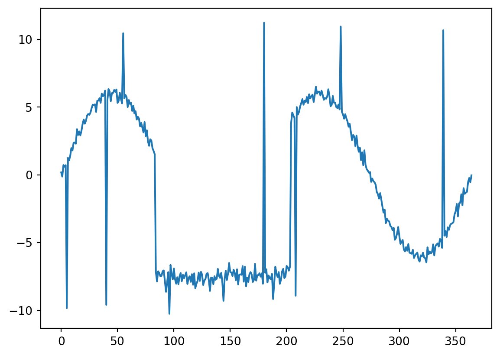
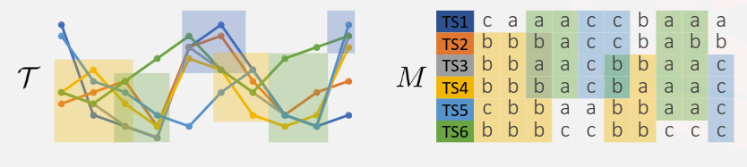
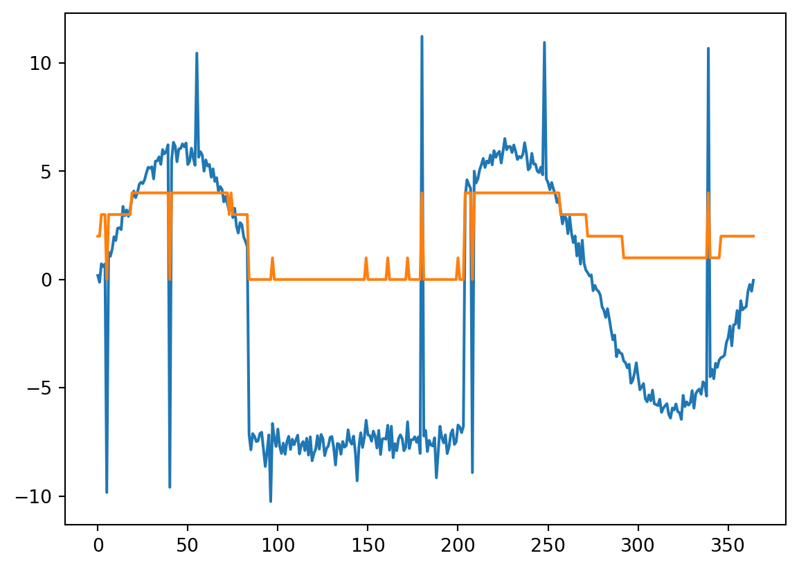
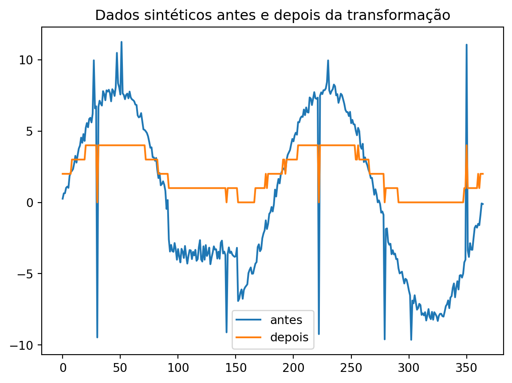
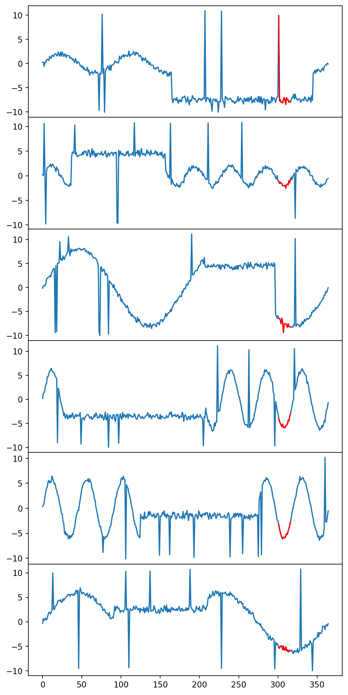

Code
from zgrouping.zgrouping import grouping, syntheticGenerator, utils
import matplotlib.pyplot as pltO estudo e a análise de séries temporais desempenham um papel crucial em uma ampla gama de campos, desde o monitoramento do varejo até a detecção de anomalias de segurança. Ao longo do tempo, observações contínuas capturam nuances e padrões que podem revelar insights valiosos sobre o comportamento de sistemas complexos. Neste contexto, a capacidade de agrupar séries temporais com base em padrões similares torna-se fundamental para extrair conhecimento significativo.
A motivação por trás dessa abordagem é multifacetada. No setor de varejo, por exemplo, a identificação de tendências locais de compra, como picos de vendas durante períodos festivos, pode ser crucial para otimizar estratégias de marketing e estoque. Da mesma forma, em análises financeiras, compreender as tendências de mercado pode orientar decisões de investimento. Em setores como saúde e biomedicina, a análise de variações sazonais e padrões de sono pode contribuir para o desenvolvimento de tratamentos mais eficazes. Além disso, o planejamento de recursos, a detecção de anomalias de segurança e a análise de dados ambientais e climáticos também se beneficiam significativamente da capacidade de identificar e compreender padrões em séries temporais.
Neste contexto, este artigo aborda a importância da abordagem de agrupamento de séries temporais, com foco no algoritmo Z-groupings. Exploraremos como esse método oferece uma perspectiva única para a identificação de grupos locais em séries temporais, destacando sua relevância e aplicabilidade em diversas áreas de estudo e prática. Ao compreendermos melhor as nuances e potenciais aplicações do Z-groupings, podemos abrir novas oportunidades para análises mais precisas e insights mais profundos em uma variedade de domínios.
O algoritmo Z-groupings não possui comparativos diretos. No entanto, existem alguns métodos clássicos que realizam tarefas comparáveis:
K-means: Este método particiona séries temporais em k clusters, onde os clusters representam grupos locais análogos aos encontrados pelo Z-groupings.
Agrupamento Hierárquico: Neste método, as séries temporais são hierarquicamente divididas com base em uma métrica de similaridade. Os grupos resultantes são comparáveis aos grupos locais identificados pelo Z-groupings.
Contudo, é importante ressaltar que esses algoritmos não são diretamente comparáveis, pois se limitam a encontrar similaridades dentro de uma única série temporal, não considerando relações entre diferentes séries.
Já em relação aos algoritmos de mineração de sequências, fica evidente que ambos compartilham diversas características fundamentais. Ambos os métodos têm a capacidade de identificar padrões sequenciais em conjuntos de dados, baseando-se na frequência de ocorrência desses padrões. Além disso, ambos utilizam o conceito de suporte para filtrar padrões menos frequentes, priorizando aqueles que são mais relevantes para a análise.
Entretanto, ao analisar as diferenças entre o Z-groupings e seus equivalentes na mineração de sequência, destacam-se aspectos distintivos que delineiam a aplicação específica do Z-groupings em contextos de séries temporais. Enquanto muitos algoritmos de mineração de sequência são aplicáveis a diversos tipos de dados, o Z-groupings é especialmente projetado para lidar com séries temporais. Sua funcionalidade principal reside na capacidade de agrupar sequências temporais em grupos locais, visando identificar associações significativas entre os padrões temporais presentes nos dados. Essa abordagem mais focalizada confere ao Z-groupings uma vantagem significativa em cenários onde a compreensão das relações temporais é crucial para a análise e interpretação dos dados.
Essas nuances ressaltam a importância do Z-groupings como uma ferramenta especializada e eficaz para a análise de séries temporais, oferecendo insights valiosos e facilitando a descoberta de padrões e associações relevantes nos dados.
Para compreender o algoritmo Z-Grouping, é fundamental dominar alguns conceitos fundamentais.
from zgrouping.zgrouping import grouping, syntheticGenerator, utils
import matplotlib.pyplot as plttc = 50
tl = 365
c = 20
no_outliers = 10
outlier_size = 10
# GROUPING GENERATION
n_bins = 5
alpha = 0.9
eta = 1.5
X_raw, y = syntheticGenerator.createSyntheticData(tc = tc, tl=tl, c = c, no_outliers = no_outliers, outlier_size=outlier_size)
plt.plot(X_raw[0])
Abstração Temporal: A abstração temporal é o processo de simplificar ou extrair características mais significativas de uma série temporal, facilitando sua análise. Exemplo: A aplicação do Symbolic Aggregate Approximation (SAX) para converter uma série temporal de vendas diárias em uma sequência de símbolos que representam padrões de vendas ao longo do tempo.
Eventos em Séries Temporais: Um evento em uma série temporal é uma ocorrência distinta ou uma característica identificável nos dados ao longo do tempo, como picos, vales, transições ou padrões recorrentes.
Rótulos de Eventos: Os rótulos de eventos são atributos simbólicos ou categorizações aplicadas aos eventos em uma série temporal para representá-los de maneira simplificada e compreensível. Exemplo: Os rótulos podem ser escolhidos de um conjunto discreto de símbolos ou categorias, como letras, números ou outros identificadores simbólicos.
Matriz de Sequência de Eventos: Uma matriz que representa a sequência de rótulos de eventos derivados das séries temporais após a abstração temporal. Cada entrada na matriz representa um evento em uma série temporal específica.
Agrupamento Local: O agrupamento local refere-se à identificação de subconjuntos de séries temporais que exibem padrões semelhantes em intervalos específicos de tempo. No contexto do Z-Grouping, os agrupamentos locais são identificados em cada canal de rótulo de evento.
Associação de Agrupamentos Locais: Associações são identificadas entre agrupamentos locais consecutivos ou sobrepostos que compartilham instâncias de séries temporais semelhantes. O objetivo é descobrir padrões mais amplos e complexos que não seriam detectados apenas nos agrupamentos locais individuais.
Semigeometric Tiling: Um algoritmo utilizado para identificar padrões ou agrupamentos em matrizes binárias, considerando combinações de intervalos de tempo e contagens de eventos.


O algoritmo Z-Grouping é composto por quatro passos distintos, cada um focado em uma etapa específica do processo de análise de séries temporais. São eles:
Geração da Matriz de Sequência de Eventos
Neste passo, uma coleção de séries temporais é convertida em uma matriz de eventos, utilizando técnicas de abstração temporal como o método SAX. Isso permite uma representação mais simplificada dos dados, facilitando a análise subsequente.
X = utils.znorm(X_raw)
X_sax = utils.SAXify(X, n_bins = 5)
X_sax[0]array([2, 2, 3, 3, 3, 0, 3, 3, 3, 3, 3, 3, 3, 3, 3, 3, 3, 3, 3, 4, 4, 4,
4, 4, 4, 4, 4, 4, 4, 4, 4, 4, 4, 4, 4, 4, 4, 4, 4, 4, 0, 4, 4, 4,
4, 4, 4, 4, 4, 4, 4, 4, 4, 4, 4, 4, 4, 4, 4, 4, 4, 4, 4, 4, 4, 4,
4, 4, 4, 4, 4, 4, 4, 3, 4, 3, 3, 3, 3, 3, 3, 3, 3, 3, 0, 0, 0, 0,
0, 0, 0, 0, 0, 0, 0, 0, 0, 1, 0, 0, 0, 0, 0, 0, 0, 0, 0, 0, 0, 0,
0, 0, 0, 0, 0, 0, 0, 0, 0, 0, 0, 0, 0, 0, 0, 0, 0, 0, 0, 0, 0, 0,
0, 0, 0, 0, 0, 0, 0, 0, 0, 0, 0, 0, 0, 0, 0, 0, 0, 1, 0, 0, 0, 0,
0, 0, 0, 0, 0, 0, 0, 1, 0, 0, 0, 0, 0, 0, 0, 0, 0, 0, 1, 0, 0, 0,
0, 0, 0, 0, 4, 0, 0, 0, 0, 0, 0, 0, 0, 0, 0, 0, 0, 0, 0, 0, 0, 0,
0, 0, 1, 0, 0, 0, 4, 4, 4, 4, 0, 4, 4, 4, 4, 4, 4, 4, 4, 4, 4, 4,
4, 4, 4, 4, 4, 4, 4, 4, 4, 4, 4, 4, 4, 4, 4, 4, 4, 4, 4, 4, 4, 4,
4, 4, 4, 4, 4, 4, 4, 4, 4, 4, 4, 4, 4, 4, 4, 3, 3, 3, 3, 3, 3, 3,
3, 3, 3, 3, 3, 3, 3, 3, 2, 2, 2, 2, 2, 2, 2, 2, 2, 2, 2, 2, 2, 2,
2, 2, 2, 2, 2, 2, 1, 1, 1, 1, 1, 1, 1, 1, 1, 1, 1, 1, 1, 1, 1, 1,
1, 1, 1, 1, 1, 1, 1, 1, 1, 1, 1, 1, 1, 1, 1, 1, 1, 1, 1, 1, 1, 1,
1, 1, 1, 1, 1, 1, 1, 1, 1, 4, 1, 1, 1, 1, 1, 1, 2, 2, 2, 2, 2, 2,
2, 2, 2, 2, 2, 2, 2, 2, 2, 2, 2, 2, 2])plt.plot(X_raw[0])
plt.plot(X_sax[0])
plt.show()
Criação de canais de rótulos
A matriz de eventos em seguida é subdividida em uma matriz binária de mesmo tamanho para cada rótulo
matrices = utils.createChannels(X_sax)
matrices[0]array([[0, 0, 0, ..., 0, 0, 0],
[0, 0, 0, ..., 0, 0, 0],
[0, 0, 0, ..., 0, 0, 0],
...,
[0, 0, 0, ..., 0, 0, 0],
[0, 0, 0, ..., 0, 0, 0],
[0, 0, 0, ..., 0, 0, 0]], dtype=int32)Geração de Agrupamentos Locais
O próximo passo envolve a identificação de agrupamentos locais em cada canal de rótulo de evento da matriz de eventos. Esse processo é conduzido pelo algoritmo de semigeometric tiling, que busca candidatos a agrupamentos locais com base na contagem de eventos em intervalos de tempo específicos. Além disso, o algoritmo utiliza um parâmetro 𝝰, variando de 0 a 1, para determinar a pureza de um agrupamento local. Por exemplo, ao definir 𝝰 como 0.75, estamos estabelecendo que pelo menos 75% dos elementos do agrupamento devem conter o evento analisado.
Identificação de Associações entre Agrupamentos Locais
Nesta etapa, o algoritmo procura associações entre os agrupamentos locais identificados. Isso é feito através da análise de candidatos a associações consecutivas, verificando a proximidade entre elas e identificando instâncias de séries temporais compartilhadas.
Validação dos Agrupamentos Locais
Por fim, os agrupamentos locais são validados em relação aos agrupamentos globais pré-definidos. Isso é feito calculando uma pontuação de validade com base na proporção de instâncias de séries temporais em comum e utilizando um parâmetro de densidade para controlar a validade dos agrupamentos locais.


A metodologia experimental da pesquisa visa avaliar o desempenho do método Z-Grouping na identificação de agrupamentos locais em séries temporais. Para isso, foi utilizada uma abordagem abrangente que inclui a análise de conjuntos de dados reais de diferentes setores, bem como um conjunto de dados sintético para investigação detalhada dos parâmetros do método. Além disso, alguns métodos foram adaptados para efeitos de comparação. Abaixo, é fornecida uma descrição mais detalhada da metodologia utilizada.
Datasets: Os conjuntos de dados reais utilizados abrangem três setores diferentes: indústria de varejo, mercado de ações e epidemias de COVID-19. Além disso, um conjunto de dados sintético foi gerado para investigação detalhada dos parâmetros do método. Este conjunto de dados sintético simula a presença de similaridade local em meio a padrões sinusoidais com diferentes frequências e amplitudes, além de incorporar ruído e outliers para refletir cenários do mundo real.
Concorrentes: Como não existe um concorrente direto para o problema, foram feitas adaptações nos métodos semigeometric tiling, kmeans, kmeans-FLEX e kNN para identificar agrupamentos locais em séries temporais.
Protocolo do Experimento: Para avaliar o desempenho do método Z-Grouping, foi desenvolvido um protocolo de experimento que envolve a divisão dos dados em conjuntos de treinamento e teste. Durante a fase de treinamento, os agrupamentos locais são identificados nos dados de treinamento. Na fase de teste, o objetivo é determinar se os agrupamentos identificados podem identificar padrões de similaridade local em novas instâncias não vistas. Para cada amostra de teste, o agrupamento global correspondente é usado como referência. Isso simula situações do mundo real, como identificar padrões de vendas de um novo produto com base em produtos existentes.
Métricas de Avaliação: Os resultados são avaliados em termos de erros de predição, como erro quadrático médio (MSE) e erro absoluto médio (MAE), bem como a cobertura dos agrupamentos, ou seja, a fração de séries temporais cobertas pelos agrupamentos identificados.
Em relação aos resultados alcançados, todos foram validados 10 vezes, e os seguintes parâmetros foram utilizados:
α: Este é um parâmetro que controla o nível de “pureza” dos agrupamentos.
λ: Este parâmetro controla o número de rótulos de abstração que o algoritmo pode usar.
η: Este parâmetro define o número mínimo de amostras necessárias para que um agrupamento seja considerado válido.
w: Este é o intervalo de tempo (em número de amostras) que esses algoritmos usam para identificar os agrupamentos locais.
k: Este é o número de agrupamentos (clusters) que esses algoritmos tentam formar.
Corte de silhueta: Este é um parâmetro que define um valor de corte para a métrica de silhueta.
Os algoritmos testados utilizaram os seguintes parâmetros:
Z-Grouping: α = {0.8, 0.9, 1}, λ = {3, 5, 10}, e η = {1, 1.5, 2}.
Semigeometric: α = {0.8, 0.9, 1}, e η = {1, 1.5, 2}.
kmeans: intervalo de tempo w = {30, 60, 180} e k = {3, 5, 10}.
kNN: intervalo de tempo w = {30, 60, 180} e k = {3, 5, 10}.
kmeans-FLEX: corte de silhueta de 0,1 até falha em detectar quaisquer agrupamentos válidos.
Em relação aos resultados no conjunto de dados sintéticos, pode-se analisar através da tabela 2 os erros de teste médios do Z-Grouping e seus quatro competidores. Através dela podemos chegar a algumas conclusões em relação ao Z-Grouping e seus concorrentes:
O Z-Grouping sempre consegue encontrar agrupamentos locais válidos de baixos erros considerando MSE e MAE;
Semigeometric sofre com sua falta de poder de representação com uma forte suposição binária superado pelo Z-Grouping em relação aos agrupamentos locais;
kNN atinge seu melhor escore com {w: 180, k: 3};
kmeans não mostra diferenças notáveis com várias configurações de parâmetros, e é geralmente pior do que seus concorrentes;
Kmeans-FLEX tem seu menor MSE sendo apenas 3,4% menor que o menor erro do kmeans;
O Semigeometric, kmeans, kNN e kmeans-FLEX são piores do que o Z-Grouping em todas as situações.
Além disso, utilizando os dados de UCR o Z-Grouping apresentou dificuldade para encontrar padrões para o agrupamento, performando de forma semelhante aos competidores devido a perda de informação pelo SAX em conjuntos mais uniformes.
Já em relação aos resultados no conjunto de dados reais, com os dados de GARMENT e STOCK o Z-Grouping apresentou resultados com diferença de 44.3% (MSE) e 25.2% (MAE) com cobertura de 88% dos dados, sendo superior aos competidores. E com os dados da COVID pode-se perceber que o trade-off de minimização do erro por perda de cobertura acabou levando o algoritmo a desempenhar com pouca melhora, sacrificando bastante da cobertura, cobrindo apenas 40% dos dados.
Por fim, ao analisarmos o efeito dos parâmetros, um λ maior pode levar a uma menor cobertura, um α maior leva a agrupamentos mais puros o que permite um número menor de rótulos de evento diferentes, e um η maior exige mais amostras no agrupamento local para validade resultando em menos agrupamentos. Os parâmetros mais altos fazem com que o algoritmo perca sua capacidade de crescer mostrando aproximadamente só 10% de cobertura, além de gerar erros mais altos devido à ausência de pontos de dados para comparação. Por isso as associações dos agrupamentos são utilizadas para aumentar a cobertura preenchendo as lacunas criadas pelos altos valores dos parâmetros.

Este artigo revela dois problemas inéditos no âmbito de mineração de agrupamentos de séries temporais, abrangendo tanto agrupamentos locais quanto globais, e propõe o Z-Grouping como o algoritmo estado-da-arte na solução de ambos. Os problemas evidenciados, bem como a solução proposta no artigo, apresentam aplicabilidade prática em múltiplas áreas, como a prevenção do desmatamento, o manejo de demandas de consumo de energia elétrica e a distribuição de medicamentos.
Além disso, duas vantagens significativas de aplicabilidade do método Z-Grouping devem ser destacadas. Primeiramente, o método permite a análise das séries temporais ao longo do tempo, sem a necessidade de ter a série completa de dados de uma vez. Isso significa que é possível analisar os dados à medida que eles se tornam disponíveis, o que é especialmente útil em cenários onde os dados são gerados continuamente. Em segundo lugar, o método não exige conhecimento prévio sobre quais dados investigar. Ele é capaz de identificar agrupamentos locais e globais nas séries temporais sem a necessidade de informações prévias sobre padrões ou características específicas dos dados. Com isso, o Z-Grouping emerge como uma ferramenta poderosa para a descoberta de padrões temporais em diferentes áreas de pesquisa e indústrias.
O Z-Grouping foi testado contra quatro soluções alternativas para o problema de agrupamentos locais, baseadas em adaptações para o problema específico proposto no artigo de abordagens utilizadas de maneira geral em agrupamentos de séries temporais. Os cinco foram avaliados em três datasets com dados do mundo real, um dataset gerado sinteticamente e os 128 datasets clássicos de séries temporais da UCR (University of California, Riverside). O resultado dos experimentos constatou que o Z-Grouping atingiu taxas de erro menores do que seus competidores, e ao mesmo tempo gerou agrupamentos locais sem limitações no tamanho dos intervalos de tempo, o que não pode ser feito utilizando as demais abordagens.
Possíveis abordagens de pesquisas futuras podem incluir o uso de outras funções de abstração temporal (além da SAX, utilizada no artigo), a aplicação de técnicas e heurísticas de otimização global na criação dos agrupamentos locais e o estudo de adaptações do algoritmo para séries temporais multivariadas, isto é, para a geração de agrupamentos multidimensionais.
Lee, Z., Trincavelli, M., Papapetrou, P. (2023). Finding Local Groupings of Time Series. In: Amini, MR., Canu, S., Fischer, A., Guns, T., Kralj Novak, P., Tsoumakas, G. (eds) Machine Learning and Knowledge Discovery in Databases. ECML PKDD 2022. Lecture Notes in Computer Science, vol 13718. Springer, Cham. https://doi.org/10.1007/978-3-031-26422-1_5
ALMEIDA, Dayse S.; NONATO, Luis Gustavo. Análise da relação entre manejos madeireiros e desmatamento usando agrupamento de séries temporais. Anais, 2021.
SILVA, P. L. P. Um Estudo sobre o Agrupamento de Séries Temporais e sua Aplicação em Curvas de Carga Residenciais. Universidade Federal de Minas Gerais, 2016.
O Z-Grouping é uma ferramenta poderosa para análise de séries temporais, oferecendo uma implementação eficiente e robusta disponível no repositório oficial dos autores do artigo: https://github.com/zedshape/zgrouping/.
Para utilizar o Z-Grouping, é necessário ter instaladas as extensões numba, numpy, pyts e o Python em sua versão 3.7 ou superior. Devido às dependências utilizadas, recomenda-se a utilização do Python 3.8 ou superior para evitar conflitos de versão.
Para instalar o Python 3.8, siga os passos abaixo:
sudo apt-get install libsqlite3-dev ## (ou sqlite-devel dependendo do SO).
cd /opt/
sudo wget https://www.python.org/ftp/python/3.8.3/Python-3.8.3.tgz
sudo tar -xzf Python-3.8.3.tgz
cd Python-3.8.3
sudo ./configure --enable-optimizations --enable-loadable-sqlite-extensions
sudo make altinstall python3.8 -m venv ./.venv
source .venv/bin/activate
pip install --upgrade pip
pip install numba numpy==1.19.5 pyts matplotlib==3.3.1 git clone https://github.com/zedshape/zgrouping.git
cd zgrouping Certifique-se de seguir esses passos com atenção para garantir uma instalação bem-sucedida do Z-Grouping em seu ambiente de desenvolvimento.
O algoritmo pode ser facilmente executado importando o método createGroupings do repositório fornecido:
from zgrouping.syntheticGenerator import createSyntheticData Ele recebe os seguintes parâmetros: * matrices: matriz de labels de evento. Essa matriz pode ser gerada utilizando o método utils.createChannel sobre as séries temporais de entrada. * alpha: o limiar de pureza. * debug: opções de print e debug. * accept: habilita a função de validação da qualidade dos agrupamentos.
O repositório do Z-Grouping já contém bases de dados para teste e avaliação do algoritmo, localizadas na pasta datasets. Algumas das bases de dados incluem: * Covid-19: Base de dados referente ao continente do país, país e contagem de casos de covid no país de 22/01/2020 até 30/09/2021. * Stocks: Base de dados de ações contendo informações como data do registro, valor de abertura do dia, maior valor no dia, menor valor no dia, volume e TAG (nome) da ação.
Além disso, o repositório inclui um gerador de bases de dados sintéticas, que cria padrões entre séries temporais. Este gerador pode ser utilizado importando o método createSyntheticData do repositório:
from zgrouping.syntheticGenerator import createSyntheticDataO método syntheticGenerator.createSyntheticData requer os seguintes argumentos: * c: Número de agrupamentos globais. * tc: Número de membros da instância por agrupamento. * tl: Tamanho de cada série temporal. * no_outliers: Número de outliers. * outlier_size: Tamanho do outlier. * amp: Amplitude. * lineranges: Comprimento de linhas retas. * lineheights: Altura das linhas retas.
Esses datasets sintéticos podem ser utilizados como substitutos para os datasets reais mencionados anteriormente. No entanto, ainda é necessário passar essas bases pelo método de criação de canais, que é o dado de entrada para o algoritmo de agrupamento.
Para ilustrar o uso do Z-Grouping, apresentamos a seguir um exemplo prático de execução do algoritmo. Os passos a seguir demonstram como gerar dados sintéticos, aplicar transformações e finalmente executar o Z-Grouping para obter os agrupamentos desejados.
Após a geração e transformação dos dados, será obtida uma matriz com padrões simbólicos, representando séries temporais. A seguir, é apresentado um exemplo dos dados antes e depois da transformação.
from zgrouping.zgrouping import grouping, syntheticGenerator, utils
import matplotlib.pyplot as plt
# Synthetic generator
tc = 50
tl = 365
c = 20
no_outliers = 10
outlier_size = 10
# Grouping generation
n_bins = 5
alpha = 0.9
eta = 1.5
X_raw, y = syntheticGenerator.createSyntheticData(tc=tc, tl=tl, c=c, no_outliers=no_outliers, outlier_size=outlier_size)
# Normalização e Transformação
X = utils.znorm(X_raw)
X_sax = utils.SAXify(X, n_bins=5)
# Visualização dos dados
plt.plot(X_raw[150], label='antes')
plt.plot(X_sax[150], label='depois')
plt.title('Dados sintéticos antes e depois da transformação')
plt.legend()
plt.show()
print(X_sax[150]) 
[2 2 2 2 2 2 2 2 3 3 3 3 3 3 3 3 3 3 3 3 4 4 4 4 4 4 4 4 4 4 0 4 4 4 4 4 4
4 4 4 4 4 4 4 4 4 4 4 4 4 4 4 4 4 4 4 4 4 4 4 4 4 4 4 4 4 4 4 4 4 4 4 3 3
3 3 3 3 3 3 3 3 3 2 2 2 2 2 2 2 2 2 1 1 1 1 1 1 1 1 1 1 1 1 1 1 1 1 1 1 1
1 1 1 1 1 1 1 1 1 1 1 1 1 1 1 1 1 1 1 1 1 1 1 1 1 1 1 1 1 1 1 0 1 1 1 1 1
1 1 1 1 0 0 0 0 0 0 0 0 0 0 0 0 0 0 0 1 1 1 1 1 1 1 1 1 2 1 2 2 2 2 2 2 2
2 2 2 2 2 2 3 3 2 3 3 3 3 3 3 3 3 3 3 4 4 4 4 4 4 4 4 4 4 4 4 4 4 4 4 4 4
0 4 4 4 4 4 4 4 4 4 4 4 4 4 4 4 4 4 4 4 4 4 4 4 4 4 4 4 4 4 4 4 3 3 4 3 3
3 3 3 3 3 3 3 2 2 2 2 2 2 2 2 2 2 2 2 2 0 1 1 1 1 1 1 1 1 1 1 1 0 0 0 0 0
0 0 0 0 0 0 0 0 0 0 0 0 0 0 0 0 0 0 0 0 0 0 0 0 0 0 0 0 0 0 0 0 0 0 0 0 0
0 0 0 0 0 0 0 0 0 0 0 0 0 0 0 1 1 4 1 1 1 1 1 1 1 1 1 2 1 2 2 2]Após a preparação dos dados, eles serão utilizados como entrada para a criação dos canais do Z-Grouping. A matriz resultante deve ter dimensões \(S \times T\), onde \(S\) é o número de séries temporais e \(T\) é o tamanho de cada série temporal. Isso significa que cada linha da matriz representa uma série temporal e cada coluna representa o valor daquela série temporal em um determinado tempo.
matrices = utils.createChannels(X_sax)Com os canais devidamente criados, será utilizado o Z-Grouping para obter os agrupamentos desejados. O código a seguir demonstra como executar o algoritmo e obter os agrupamentos:
groupings, associations = grouping.createGroupings(matrices, alpha=alpha, accept=False, debug=True) [DEBUG] BEGIN Local grouping generation
[DEBUG] Generating local grouping candidates from one event label channel - time taken: 44.951890109000004
[DEBUG] Generating local grouping candidates from one event label channel - time taken: 36.923591759
[DEBUG] Generating local grouping candidates from one event label channel - time taken: 26.490854166999995
[DEBUG] Generating local grouping candidates from one event label channel - time taken: 36.19687330400001
[DEBUG] Generating local grouping candidates from one event label channel - time taken: 29.767859024000018
[DEBUG] BEGIN Association generationA variável groupings resultante é uma lista de objetos, onde cada objeto representa um agrupamento detectado. Cada agrupamento contém dois campos importantes: * members: um vetor de booleanos indicando se uma série temporal pertence ou não a esse agrupamento, funcionando como uma máscara. * range: o intervalo de tempo no qual o padrão se repete entre as séries temporais.
Agora, para melhor visualização dos resultados, foi feita uma função que desenha os gráficos de algumas das séries temporais pertencentes a um determinado agrupamento e destaca o padrão detectado.
::: {#409c2256 .cell execution_count=9} ``` {.python .cell-code} import random
def print_3_examples(data, grouping, number_prints): mask = [(index, value) for (index, value) in enumerate(grouping[‘members’])] members = list(filter(lambda tuple : tuple[1], mask))
randIndexList = [random.randint(0, len(members) -1) for i in range(number_prints)]
choosedMembers = [members[index][0] for index in randIndexList]
interval = grouping['range'][0:number_prints]
fig, axs = plt.subplots(nrows=number_prints, ncols=1)
fig.set_figheight(15)
i = 0
for ax, i in zip(axs, choosedMembers):
thisData = data[i]
patternData = list(filter(lambda tuple: interval[0] <= tuple[0] <= interval[1], enumerate(thisData)))
patternX = [pattern[0] for pattern in patternData]
patternY = [pattern[1] for pattern in patternData]
ax.plot(thisData)
ax.plot(patternX, patternY, 'r')
i += 1
plt.subplots_adjust(hspace=0.0)
plt.show()
print(choosedMembers) print_3_examples(X_raw,groupings[13], 6) ```
::: {.cell-output .cell-output-display}  :::
::: {.cell-output .cell-output-stdout} [602, 801, 702, 230, 437, 916] ::: :::